Il problemaThe problem
EsploraMi affronta il problema dell’overtourism e del disorientamento che molti viaggiatori provano di fronte a itinerari standardizzati. Il servizio accompagna l’utente a 360 gradi, dalla pianificazione fino al post-viaggio.
EsploraMi tackles overtourism and the disorientation many travelers feel when faced with standardized itineraries. The service supports users end to end, from planning to the post-trip.
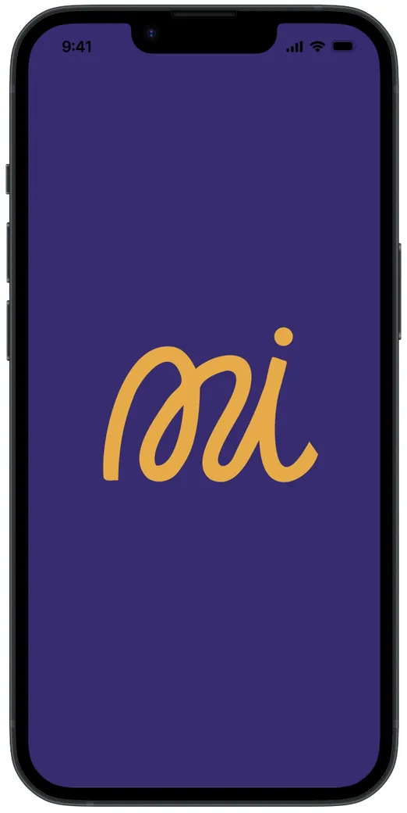
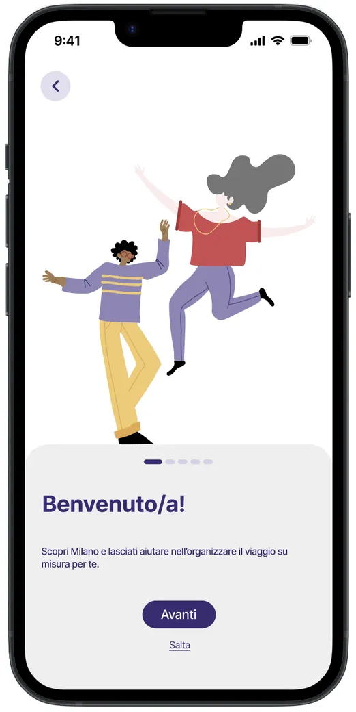
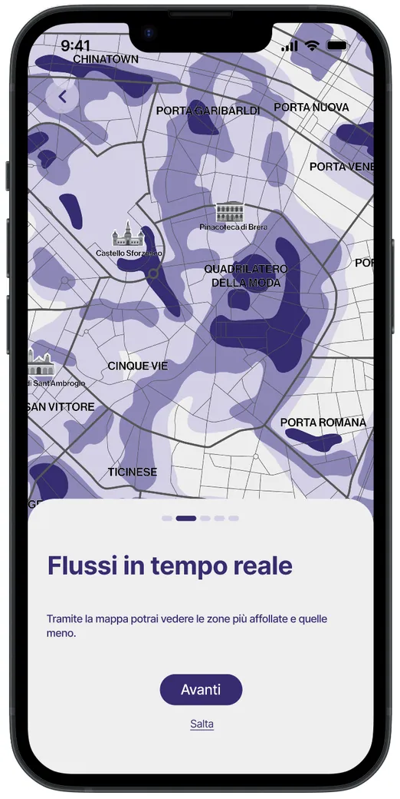
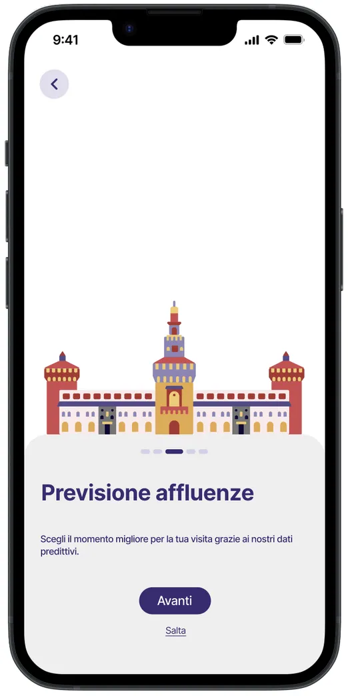
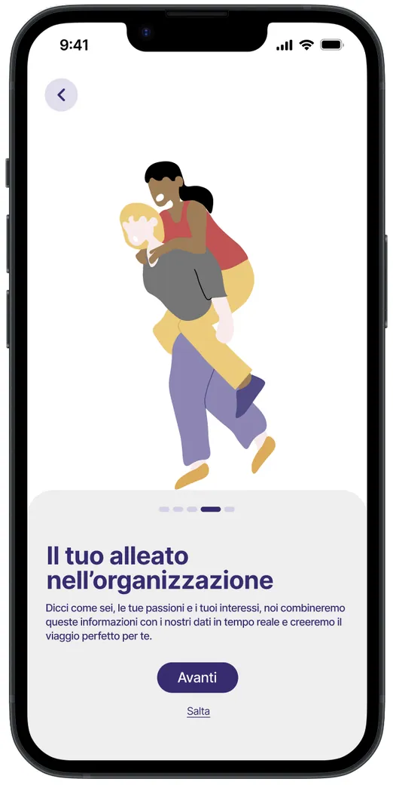
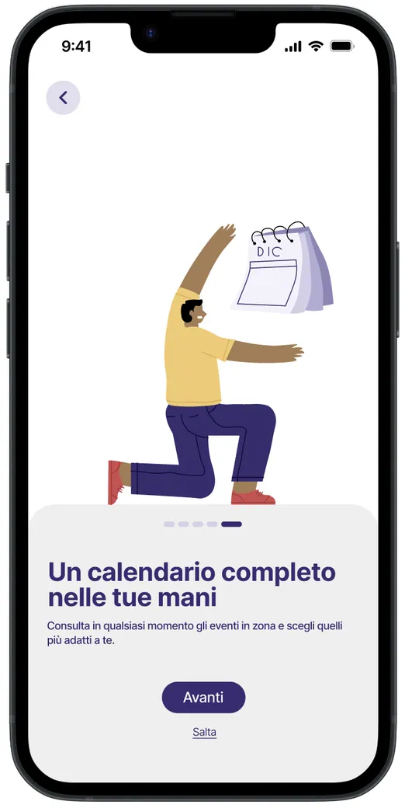
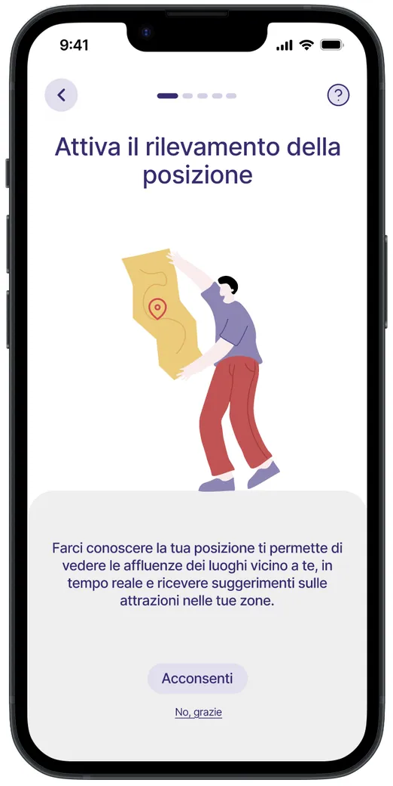
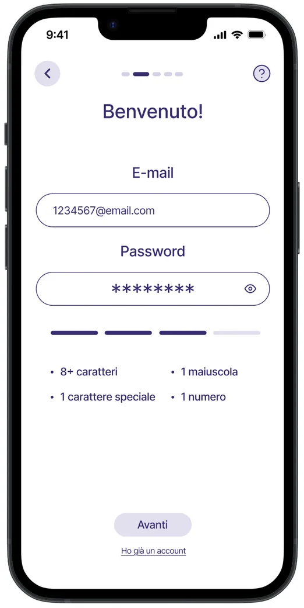
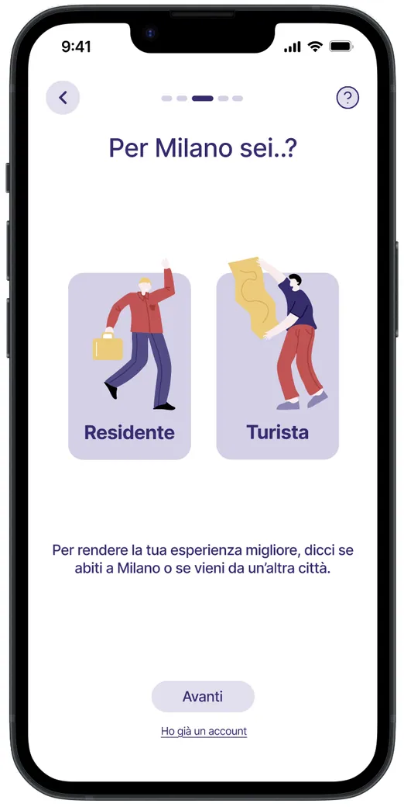
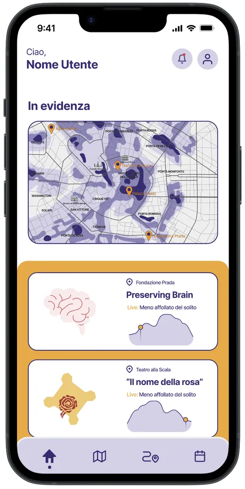
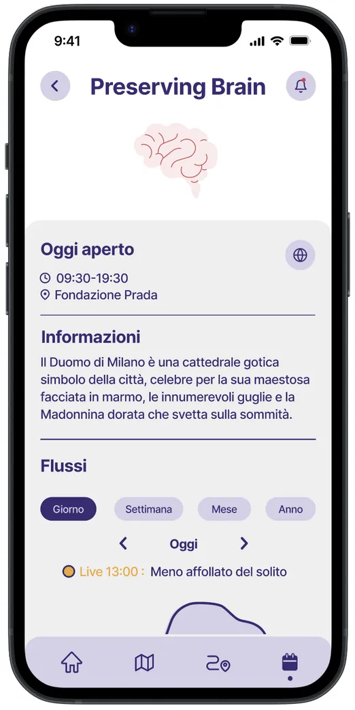
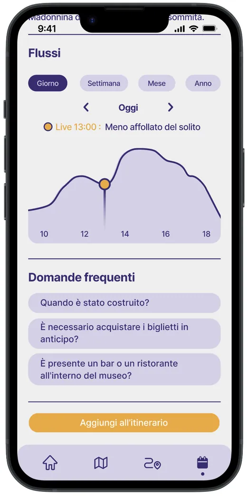
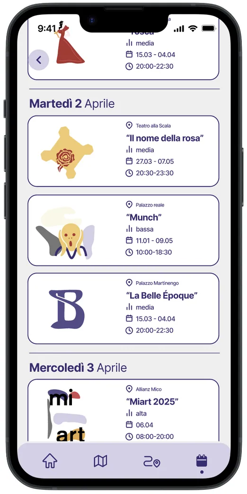
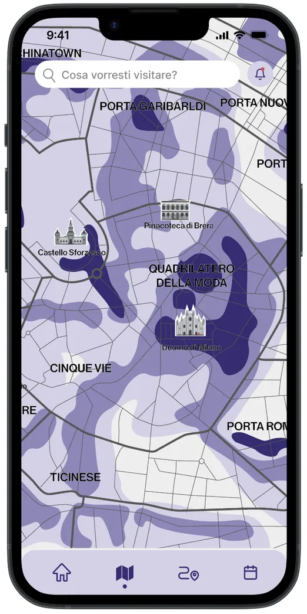
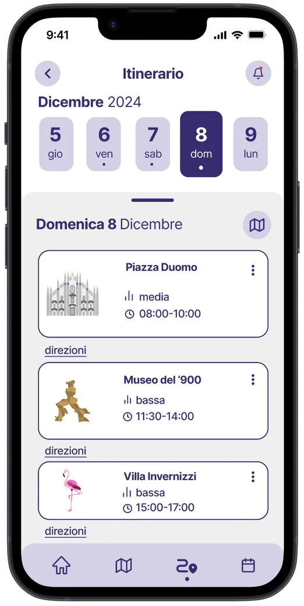
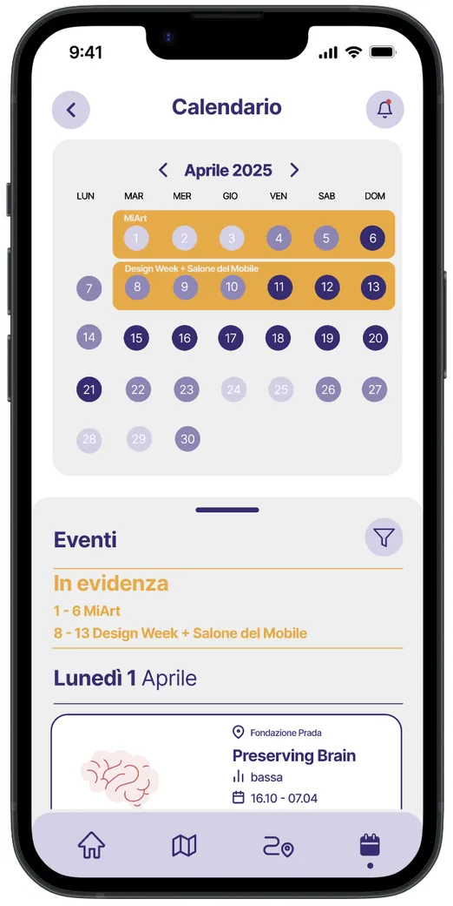
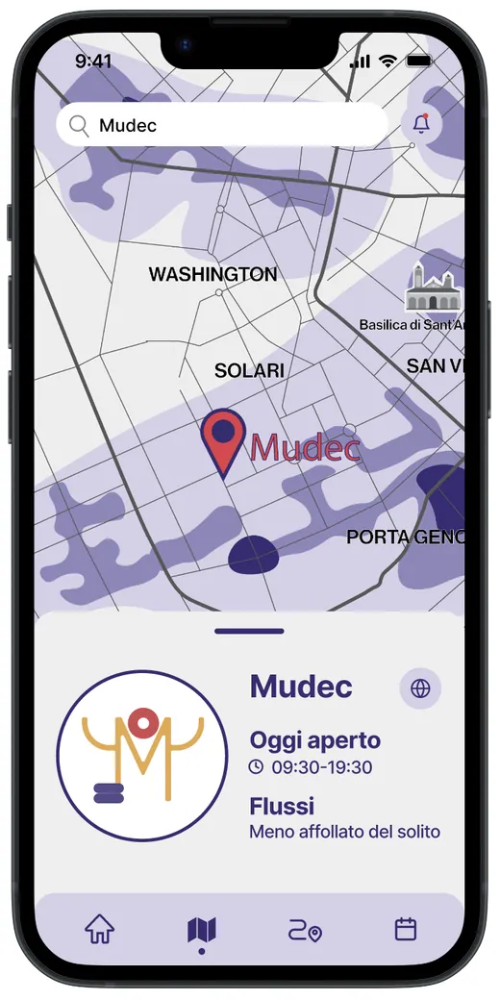
Il prototipo, schermata per schermata. Trascina o scorri di lato.The prototype, screen by screen. Drag or scroll sideways.
Come funzionaHow it works
Tutto inizia con un’accurata profilazione dei gusti del turista, che permette al sistema di generare un calendario interattivo e una mappa con proposte su misura.
It all starts with a careful profiling of the traveler’s tastes, which lets the system generate an interactive calendar and a map of tailored suggestions.

Cosa c’è di nuovoWhat’s new
L’innovazione chiave è l’ottimizzazione temporale: integrando dati sui flussi urbani (grazie allo studio con IGPDecaux), EsploraMi suggerisce gli orari migliori per evitare la congestione. Il risultato è un’esperienza più autentica per il viaggiatore e un turismo più sostenibile per la città.
Its key innovation is time optimization: by integrating urban flow data (thanks to the study with IGPDecaux), EsploraMi suggests the best times to avoid crowds. The result is a more authentic experience for travelers and more sustainable tourism for the city.